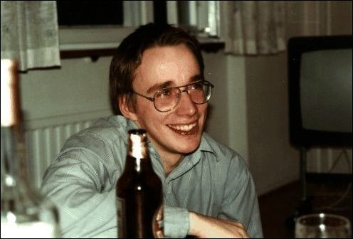

Linus Torvalds at his young age
A few facts about Linus Torvalds
- Linus was born in Finland and considers Swedish to be his mother tongue
- He was named after a Nobel prize winner
- Started writing programs at the age of 10 on his first computer Commodore Vic 20
- He created Linux because he didn't have money for UNIX
- Linux was his main project at University
- "Linux: A Portable Operating System" was the title of his thesis for his M.Sc
- Torvalds has also created git - a version control system
- Steve Jobs offered Linus Torvalds a job on the condition that he stops the development on Linux kernel but Linus declined and turned down his offer
- Torvalds hates C++ and jokes that Linux kernel compiles faster than a C++ program
- Linus loves scuba diving
- Linus rarely gets to code anymore
- Linus has used only one social media website Google Plus which was shut down by Google
- Linus is blessed with three daughters and a wife
"Most good programmers do programming not because they expect to get paid or get adulation by the public, but because it is fun to program."
─Linus Torvalds